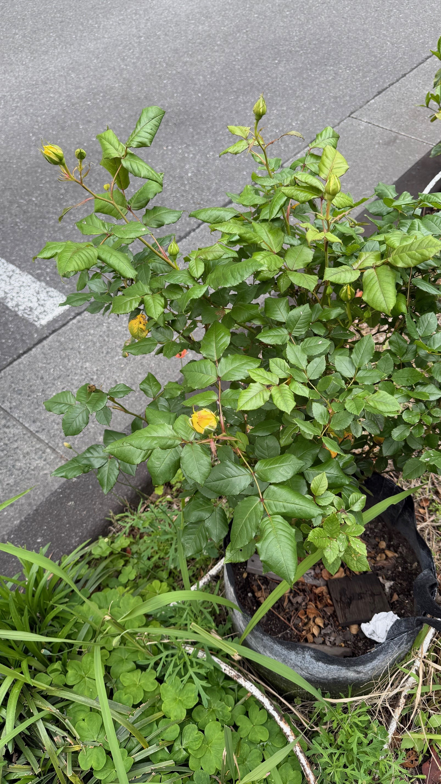

人間がHEXを正確に覚えることは不可能。 だから、記憶の「範囲」を正解にする。 柳森神社のサニービーチ薔薇から、そのロジックを解説する。

dunksoft.jp のピッチページに掲載されていた漢字カラーチップ「海 = #EDB830」と、 柳森神社の薔薇から今朝Claudeが抽出したコアHEX「#E8B84B」を比較。 色相差はわずか 4°。 星野さんが直感で選んだ「晃の色」は、設計段階のパレットと独立して一致していた。